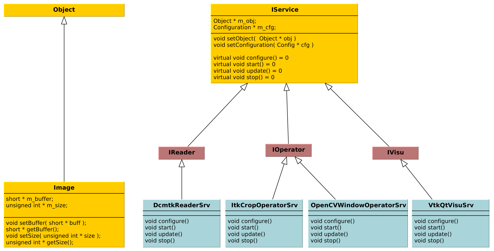

FW4SPL, a framework for applications based on medical imaging.
Flavien Bridault
RMLL 2015 - Beauvais, Wednesday, 8th 2015
IRCAD (Strasbourg, France)
- Institut de Recherche contre les Cancers de l'Appareil Digestif
- Created by Jacques Marescaux in 1994
- Training center - Research
- IRCAD is a research institute against digestive system cancers.
- It is known worldwide especially because it is a training center, where 4000 surgeons/year attend courses on mini-invasive and laparoscopic surgery.
- There are also two research and development teams. One about Robotics, and an another one about Computer Vision. FW4SPL is the framework developed by this team.
IHU Strasbourg
- Institut Hospitalier Universitaire
- Mini-invasive surgery guided by image
- IHU is located next to IRCAD.
- It is a research center about mini-invasive surgery guided by image.
- IHU also contributes to FW4SPL.
Presentation purpose
- Why IRCAD R&D team has developed FW4SPL ?
- Explain the design
- Show the main features
- Help to start developing
FW4SPL meaning
- FrameWork for Software Production Line
- Nickname: F4S -> Forces [fɔʁsjz]
- Also a disclaimer
IRCAD context

- At IRCAD, we make prototypes/PoC of software based on medical imaging
- Our data is the patient
- Historically we have worked on different steps of the image process
Thanks to the 3D segmentation, we can help the surgeon to analyse a patient pathology. We worked on tools that help to plan the surgery. This activity has led to create a start-up called Visible Patient.
We also worked on medical simulators in laparoscopy. Laparoscopy is a way to perform a surgery with only small incisions in the abdomen. Surgeons interact with mechanical instruments and watch the organs through camera. Simulators help them to train without a . This activity has led to create a start-up called Digital Trainers.
Today we are focused on augmented reality. In laparoscopy, the surgeon has a very tight field of view. We superimpose informations on the video to help them during the surgery, for instance here, the location of the tumor on a liver.
IRCAD R&D team

- Researchers (3)
- Engineers (7)
- Phd. students (3)
- Trainees (6)
- Internships (4)
- Around 20 people
Why a framework ?
- Quick development, reuse source code
- Intensive use of open source libraries (boost, Qt, VTK, ITK,...)
- Integrate trainees/students/researchers/partners code
- software/prototype - Windows, OSX, Linux, Android, IOs
- reuse source code
- we don't want people to work on different library versions, with different options,...
- we need to integrate the different applications/fragmented code
FW4SPL characteristics
- Object/services design
- Component based (inspired by OSGi)
- Applications built in XML
- Developed in C++
- Multi platforms (Windows, Linux, OSX, Android)
- Dependencies on many open source libraries
- Licensed under LGPL
- To match all these goals...
- XML, not common to build applications
Important dates
- 2004 : creation of FW4SPL project
- 2009 : FW4SPL became open-source (LGPL)
- 2010-2011 : PoC Sofa and Kinect (Altran-Est)
- 2013 : Creation of the FW4SPL board
- Sofa: biomechanical engine
- Altran: proof that FW4SPL could be used outside IRCAD
- Visible Patient was created in 2013 to commercialize the planning applications,...
Outline
- Object/Service approach
- Communication
- Component based approach
- Discussion
- Getting started
What is the Object/Service approach ?
Classic object-oriented approach
- an object (i.e. an image) is represented by a class.
- this class contains all functionalities working on the object (read, write, filter, visualize, ...)

Limits of this approach
- Too many methods in the class, hard to maintain
- Many dependencies required even if you only need a single method.
- Collaborative work harder
Solution
- Split data and functions
- Too many functions, if team continue to add functions
- Many dependencies required (itk,vtk,qt,dcmtk,...) even if you just need to crop an image
- Everyone work on the same file
Service
- Only one functionality (Read, Crop, Visualize...)
- Class of services (IReader, IOperator, IVisu)
- State pattern
- to this end, we use to concept of service
- we can observe that for each process, we always have to repeat the same execution pattern, life cycle, configure, then initialize, update and stop
- update can be repeated

- transitions, on ne peut pas passer de configure à stop
- We need to store data into it
Service approach example
- Common interface 4 methods
- sub-classes for each type
- one service for each functionality
DcmtkReaderSrv
- configure() : verify if url is ok
- start() : do nothing
- update() : read the data ( equivalent to readImageFromPacsWithDcmtk() )
- stop() : do nothing
ItkCropOperatorSrv
- configure() : verify if the cropping region is valid
- start() : do nothing
- update() : compute the cropping on image and set the new data (equivalent to cropImageWithItk )
- stop() : do nothing
VtkQtVisuSrv
- configure() : verify if the screen support this size
- start() : initialize Qt frame and vtk pipeline and show the frame
- update() : check the buffer, if it has changed, refresh the vtk pipeline
- stop() : destroy vtk pipeline and uninitialize Qt frame.
- configure() : verify if the screen support this size
- start() : initialize Qt frame and vtk pipeline and show the frame (image is not shown if image buffer is null )
- update() : check if the buffer has be changed, if true, refresh the vtk pipeline to show negato
- stop() : destroy vtk pipeline and uninitialize Qt frame.
Application description in XML
- Objects and services classes are registered dynamically
- Instances are created by a factory
- Application launcher read a XML configuration file
XML configuration file
<object type="::fwData::Image"> <service uid="myFrame" impl="DefaultFrame" type="IFrame" > <gui> <frame> <minSize width="800" height="600" /> </frame> </gui> <registry> <view uid="myVisu" /> </registry> </service> <service uid="myVisu" impl="vtkSimpleNegatoRenderer" type="IRender" /> <service uid="myReader" impl="VtkImageReader" type="IReader" > <filename path="./TutoData/patient1.vtk"/> </service> <start uid="myFrame" /> <start uid="myVisu"/> <start uid="myReader"/> <update uid="myReader"/> <!-- Read the image on filesystem --> <update uid="myVisu"/> <!-- Refresh the visu --> </object>
Problem
And if we read a new image later ?
- We can no longer call update() of the visualization from the xml
- How to automate the call ?
Outline
- Object/Service approach
- Communication
- Component based approach
- Discussion
- Getting started
Communication
- Signals/Slots (inspired by Qt)
- Data -> Service
- Service <-> Service
- Slot call
- synchronous
- asynchronous

void DcmtkReaderSrv::update() { // Load an image using dcmtk Dcmtk::Image img; ... Image* img = this->getObject<Image>(); // Convert dcmtk image data in our format img->createImage(img, size); // Emit the signal "modified" Signal* sig = img->signal("modified"); sig->asyncEmit(); }
<object uid="imageUID" type="::fwData::Image"> ... <service uid="myVisu" impl="vtkSimpleNegatoRenderer" type="IRender" /> <service uid="myReader" impl="VtkImageReader" type="IReader" > <filename path="./TutoData/patient1.vtk"/> </service> <connect> <signal>imageUID/modified</signal> <slot>myVisu/update</slot> </connect> <start uid="myFrame" /> <start uid="myVisu"/> <start uid="myReader"/> </object>
Outline
- Object/Service approach
- Communication
- Component based approach
- Discussion
- Getting started
Component in FW4SPL
- Also called Bundle
- Dynamic library, loaded on demand
- Group services, by theme and/or by dependency
- Examples:
- ioVTK: reading/writing image or mesh data from VTK formats
- uiImageQt: Qt widgets to manipulate images
Component based approach
Benefits
- Code reuse without recompiling
- Improve external dependencies management (VTK, ITK, Qt,...)
- Easier support
- Easier collaborative work
Examples
- Eclipse,...
- Code split
- Reuse code in another application, without recompiling your program, even no link of your application against a library
- Easier support EXAMPLE correction of bug
Content of a Bundle
- Xml description file : plugin.xml
- Library binary ( .so, .dll, .dylib)
- Other shared resources ( icons, sounds, ... )
- When a Bundle is compiled
- Xml description file ( plugin.xml ) to describe the content of the dynamic library
Extract of plugin.xml (ioITK)
<plugin id="ioITK" class="ioITK::Plugin"> <library name="ioITK" /> <requirement id="io" /> <requirement id="gui" /> <extension implements="::fwServices::registry::ServiceFactory"> <type>::io::IReader</type> <service>::ioITK::InrImageReaderService</service> <object>::fwData::Image</object> <desc>Inrimage Reader (ITK/Ircad)</desc> </extension> <extension implements="::fwServices::registry::ServiceFactory"> <type>::io::IWriter</type> <service>::ioITK::InrImageWriterService</service> <object>::fwData::Image</object> <desc>Inrimage Writer (ITK/Ircad)</desc> </extension> <extension implements="::fwServices::registry::ServiceFactory"> <type>::io::IWriter</type> <service>::ioITK::JpgImageWriterService</service> <object>::fwData::Image</object> <desc>Jpeg Writer (ITK)</desc> </extension> ... </plugin>
- This shows how to register services in the factory
- This helps to load bundles dynamically
- Don't talk about extension points
Bundles in application
profile.xml
- Input file for the launcher
- Describe which bundles to use
<profile name="TestApp" version="0.1.0">
<activate id="dataReg" version="0-1" />
<activate id="gui" version="0-1" />
<activate id="guiQt" version="0-1" />
<activate id="io" version="0-1" />
<activate id="ioVTK" version="0-1" />
<activate id="media" version="0-1" />
<activate id="visu" version="0-1" />
<activate id="visuVTK" version="0-1" />
<activate id="visuVTKQt" version="0-1" />
<activate id="TestApp" />
<activate id="appXml" version="0-1" >
<param id="config" value="TestAppBase" />
<param id="parameters" value="TestAppBase" />
</activate>
<start id="visuVTK" />
<start id="visuVTKQt" />
<start id="guiQt" />
<start id="appXml" />
</profile>Example : I/O Bundles
- Switch GUI !!!
Outline
- Object/Service approach
- Communication
- Component based approach
- Discussion
- Getting started
Design of a new application
- Write a new xml configuration file (plugin.xml)
- Pick the bundles you need (profile.xml)
- Write new services
- Create new bundles/libraries
- Share common code in regular shared libraries (.so,.dll)
Discussion
Services and components
Cons
- Think design differently
- Need to write a new class for each new functionality
Pros
- Far less coupling !
- No need for a public and private API
Outline
- Object/Service approach
- Communication
- Component based approach
- Discussion
- Getting started
Online documentation
- Documentation http://fw4spl-doc.readthedocs.org/
- Developper blog http://fw4spl-org.github.io/fw4spl-blog/
Downloading FW4SPL
- Github : https://github.com/fw4spl-org
- BitBucket : https://bitbucket.org/fw4splorg
- Do not use the obsolete googlecode page !!! https://code.google.com/p/fw4spl/
- googlecode may still be in the search engine results
Which version to use ?
Current stable version : 0.10.1
Current development version : 0.10.2
- Strongly advised for a new software (communication API is simpler)
- Temporarily we need patches repositories, only available on bitbucket
hg qclone https://bitbucket.org/fw4splorg/fw4spl-patches
Repositories
Type | Sources | Dependencies |
|---|---|---|
Main | fw4spl | fw4spl-deps |
Extended | fw4spl-ext | fw4spl-ext-deps |
AR | fw4spl-ar | fw4spl-ar-deps |
Third-part libraries
- Build scripts (CMake ExternalProject_Add())
- dependencies = external libraries (examples)
- before building fw4spl, you must build dependencies
- extended : work in progress
Main repository (fw4spl)
- Basic data (Float, Integer, String, Image, Mesh,... )
- GUI (Qt)
- Data I/O (JSON, DICOM (gdcm), VTK, Inr)
- 2D rendering (Qt)
- 3D rendering (VTK)
- Around 15 tutorials
- Medical images viewer : VR-Render
Extended repository (fw4spl-ext)
- DICOM (dcmtk)
- OpenIGTLink support
Augmented reality repository (fw4spl-ar)
- Video player (QtMultimedia): file, camera or network
- Tag-based video tracking (Aruco, OpenCV)
- ARCalibration : Camera calibration (mono, stereo)
- DroidTracking : Tag tracking on Android devices
Debian Integration
- Available on testing
- Previous stable version 0.9.2
- Ready to use !
Stay tuned !!!
Coming in September 2015
- Ogre3D integration : fw4spl-Ogre3d
- Advanced rendering techniques
- Better performances
Thank you !
fw4spl at gmail.com
fbridault at ircad.fr
johan.moreau at ircad.fr
Presentation made with Hovercraft